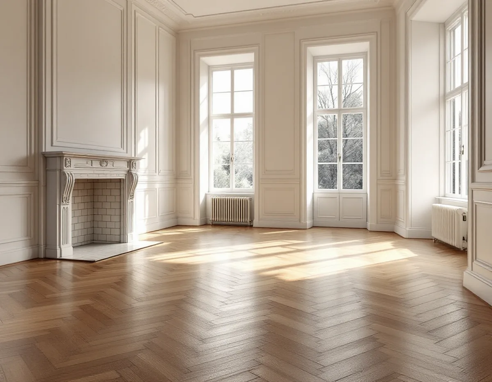
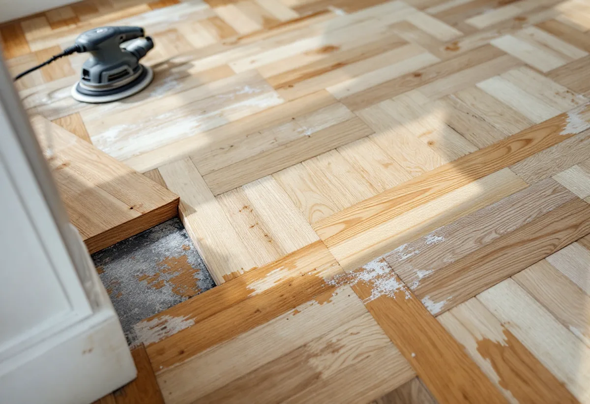

Platsbesök
Vi tittar på mönstret, letar efter skadade stavar och ser varifrån ljuset kommer.
En fiskbensparkett eller ett golv i rutmönster har stavar som ligger åt olika håll, och det ställer egna krav på hur maskinen förs över golvet. Golvbranschens riktlinjer beskriver därför en särskild slipordning för mönstergolv. Geal Entreprenad AB slipar och ytbehandlar trägolv i Danderyd och planerar slipriktningen efter mönstret och rummets ljus innan arbetet börjar.

Danderyds översiktsplan beskriver Djursholm som landets första villastad anlagd som förort, grundad på privat initiativ. Bebyggelsen speglar framför allt perioden 1890–1930, och i villorna kan stilidealen följas från de första enkla trävillorna till nationalromantik, jugend och funktionalism. Stocksund beskrivs som en villastad från sekelskiftet och 1900-talets två första decennier, med villor för ett välbärgat tjänstemannaskikt.
Planen pekar ut värdekärnor där riksintresset preciseras. I området Ringen och Skogsliden är i stort sett samtliga villor byggda på 1910-talet, och i området kring Vasavägen är villorna uppförda mellan 1890 och 1910. Beskrivningarna gäller husen utifrån. Vilket golv som ligger i salongen eller hallen avgörs på plats, och har det ett mönster börjar planeringen där.

Golvbranschens riktlinjer för slipning, SLIP 22, säger att finslipning med bandmaskin ska göras i träets längdriktning. På rutmönster, fiskben och andra mönster där träet ligger åt olika håll går det inte, och då slipas golvet normalt först diagonalt och sedan i rummets längdriktning, eller från det håll ljuset kommer. Efter färdigslipningen får inga slipränder finnas kvar annat än efter slutpappret.
Kanterna längs väggarna slipas med en kantslip och något grövre papper än golvet i övrigt, så att strukturen blir densamma ända ut till listen. Oavsett maskin ska slutresultatet motsvara bandslipning med korn 100 för barrträ och 120 för lövträ, och det får inte finnas skillnader i struktur mellan kanterna och resten av golvet.
I ett rum med stora fönster åt ett håll väljer vi därför slipriktning efter fönstren, så som riktlinjerna beskriver.
I ett gammalt parkettgolv kan någon stav vara skadad, spjälkad eller tydligt mörkare än de andra. Golvbranschens bedömningsgrunder för massiva trägolv anger byte av stav eller bräda som åtgärd för urspjälkning och kantskador, och för en mörk eller ljus stav som sticker ut. Mindre fel kan i stället spacklas och lagas.
En ny stav kan ha en annan ton än de gamla. Bedömningsgrunderna konstaterar att färgskillnader mellan gammal och ny beläggning kan förekomma vid byte, men att skillnaden minskar med tiden. Därför byter vi så få stavar som möjligt och väljer dem så lika det gamla träet som det går.
Springor är en mindre fråga i parkett än i breda brädor. Golvbranschens handbok Trägolv på golvvärme skriver att springornas storlek till stor del beror på stavens eller brädans bredd. Smal stav ger liten springa, och på mindre massiva parkettstavar blir springbildningen mycket liten.
Riktlinjerna för lackering, LACK 22, delar in golvlack efter slitage. Lack för lätt slitage är avsedd för bostadens rum utom kök och hall, lack för medelslitage för till exempel vardagsrum, och båda stryks tre gånger med mellanslipning efter första strykningen. Den första strykningen kan enligt riktlinjerna ersättas med tre spacklingar med rostfri stålspackel.
Föredrar du olja ska golvet enligt OLJA 22 vara torrt, rent och nyslipat, och fuktkvoten får inte överstiga 8 procent i lövträ som ek eller 12 procent i barrträ.
Hur golvet i en äldre villa bäst lagas, eller när det är rimligare att lägga nytt, beskrivs under golvläggare i Danderyd. Mer om olika golv finns på sidan om golvläggning.
Vi tittar på mönstret, letar efter skadade stavar och ser varifrån ljuset kommer.
Slipning, stavbyten och ytbehandling redovisas var för sig.
Skadade stavar byts och mindre skador spacklas innan slipningen.
Golvet slipas först diagonalt över mönstret och sedan i rummets längdriktning.
Kantslip längs väggarna med samma struktur som resten av golvet.
Ytbehandlingen läggs i rätt antal lager med torktid emellan.
Att slipa golv räknas som rotarbete i ett småhus enligt Skatteverket. Avdraget gäller arbetad tid på plats, inte stavar, lack eller olja.
Avdraget är 30 procent av arbetskostnaden, högst 50 000 kr per person och år och högst 75 000 kr tillsammans med rutavdrag. Material och resor ger inget avdrag, och Geal drar avdraget direkt på fakturan.
Golvytan, mönstret, hur många stavar som behöver bytas och vilken ytbehandling du väljer betyder mest. Efter ett gratis platsbesök får du ett skriftligt kostnadsförslag.
Parkett, trägolv, klinker och slipning.
Golvläggning i Stockholm →Takbyte, takbesiktning och plåtarbeten.
Takläggare i Danderyd →Djursholm, Stocksund och Enebyberg.
Takrenovering i Danderyd →Villastäder, lovplikt och strandskydd.
Attefallshus i Danderyd →Tillbyggnad, tomt och kommunens riktlinjer.
Byggföretag i Danderyd →Kalkfärg på puts, linoljefärg på trä.
Fasadmålning i Danderyd →Villastäder, egnahem och grupphus i Danderyd.
Fasadrenovering i Danderyd →Lovplikt, klassning och spröjs i Danderyd.
Fönsterbyte i Danderyd →Varsamt underhåll av villafönster i Djursholm.
Fönsterrenovering i Danderyd →Originalgolv i villor från 1890-talet och framåt.
Golvläggare i Danderyd →Villastäder, ritningar och ventilation.
Badrumsrenovering i Danderyd →Villastäder, egnahem och kommunens regler.
Köksrenovering i Danderyd →Villor, egnahem och grupphus i Danderyd.
Målare i Danderyd →Rännor, stuprör och beslag i Danderyd.
Plåtslagare i Danderyd →Altaner, staket och carport.
Snickare i Danderyd →Villastaden, takmaterial och solceller.
Takbyte i Danderyd →Tapet och papptak i äldre villor.
Tapetsering i Danderyd →Funkis, grupphus och 1950-talsvillor.
Tillbyggnad i Danderyd →Riva varsamt, bygga om helt.
Totalrenovering i Danderyd →